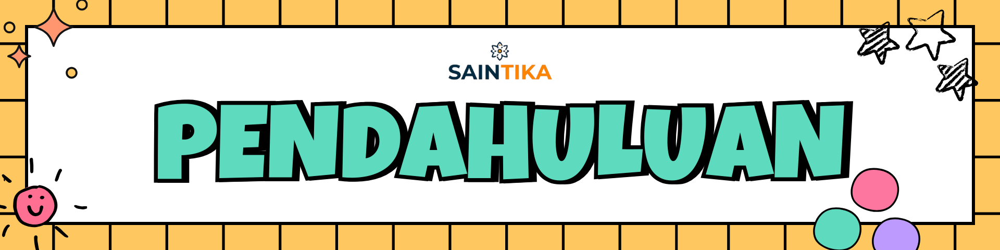
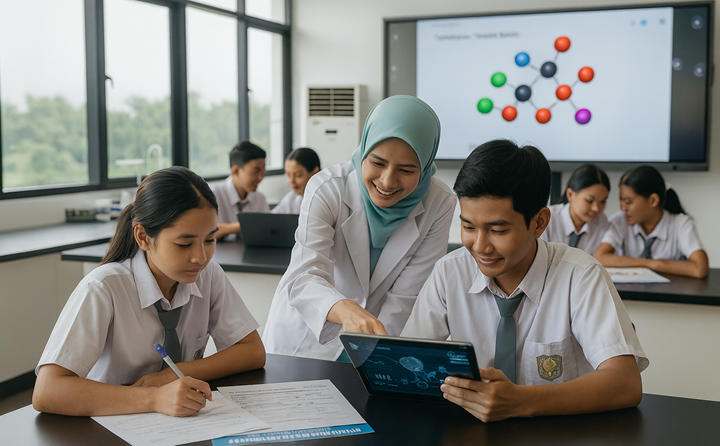

Latar Belakang
Perkembangan teknologi kecerdasan artifisial (KA) yang pesat telah mengubah wajah pendidikan di berbagai tingkatan. Di samping membuka peluang baru untuk personalisasi pembelajaran, analisis data, dan simulasi eksperimen, KA juga menuntut pendidik untuk menyesuaikan praktik perencanaan pembelajaran agar tetap relevan dan efektif. Dalam konteks pembelajaran kimia, yang menuntut pemahaman konsep abstrak, integrasi KA berpotensi memperkaya pengalaman belajar murid sekaligus meningkatkan efisiensi desain instruksional guru.

Namun demikian, realitas di lapangan menunjukkan adanya kesenjangan antara potensi teknologi dan praktik pembelajaran yang berlangsung. Banyak guru belum memiliki pemahaman yang memadai tentang cara memilih, mengadaptasi, dan mengevaluasi alat KA yang sesuai dengan tujuan pembelajaran kimia. Selain itu, keterbatasan infrastruktur, kekhawatiran etis, serta kebutuhan pengembangan kompetensi pedagogis dan teknis bagi guru menjadi hambatan yang perlu diatasi secara sistematis. Tanpa panduan yang jelas, penerapan KA dapat berujung pada penggunaan yang kurang efektif atau bahkan menimbulkan konsekuensi negatif bagi proses pembelajaran.
Kebutuhan akan modul yang sistematis menjadi semakin mendesak. Modul tersebut harus menjembatani aspek teori dan praktik, menghadirkan landasan konseptual tentang KA, pedoman memilih dan memanfaatkan alat (misal simulasi molekuler, sistem penilaian adaptif, pembuat soal otomatis), serta langkah-langkah perencanaan pembelajaran yang mengintegrasikan prinsip keselamatan, etika, dan aksesibilitas. Modul juga perlu memberikan contoh rancangan pembelajaran (lesson plan), rubrik penilaian, dan studi kasus yang relevan dengan kurikulum kimia agar guru dapat langsung mengadaptasi ke konteks kelas masing-masing.
Selain itu, penguatan kompetensi digital guru menjadi pondasi penting. Mengacu pada Digital Competence of Educators Framework dari UNESCO, guru perlu mengembangkan keterampilan dalam enam area kunci: (1) keterlibatan profesional melalui teknologi digital, (2) penciptaan dan berbagi konten digital, (3) pengelolaan dan pemanfaatan sumber belajar digital, (4) asesmen dengan teknologi digital, (5) pemberdayaan murid melalui pembelajaran berbasis digital, serta (6) pengembangan kompetensi digital murid itu sendiri. Kerangka ini memberikan acuan praktis bagi guru kimia untuk memastikan penggunaan KA tidak hanya bersifat teknis, tetapi juga pedagogis, etis, dan transformatif.
Dengan demikian, modul ini disusun untuk membantu guru kimia mengembangkan kompetensi merancang pembelajaran yang memanfaatkan KA secara bijak dan efektif, meningkatkan keterlibatan murid, memperdalam pemahaman konsep, dan memperkuat keterampilan berpikir kritis serta literasi data. Melalui pendekatan yang berimbang antara aspek pedagogis, teknis, dan etis, diharapkan integrasi KA dalam perencanaan pembelajaran kimia dapat menjadi alat pemberdayaan yang mendukung mutu pembelajaran sesuai tujuan kurikulum dan kebutuhan abad ke-21.
Tujuan Pembelajaran
Setelah mengikuti seluruh kegiatan dalam modul ini, Bapak/Ibu diharapkan mampu:
- menyusun tujuan pembelajaran Kimia yang memanfaatkan media berbasis kecerdasan artifisial (KA);
- mendesain aktivitas pembelajaran Kimia berbantuan KA dengan pendekatan saintifik dan model pembelajaran aktif (PBL, PjBL, IBL, atau discovery learning);
- merancang instrumen asesmen formatif dan sumatif berbasis KA yang sesuai dengan kompetensi dan indikator capaian pembelajaran; serta
- menghasilkan rancangan Modul Ajar Kimia yang terintegrasi dengan media dan asesmen berbantuan KA.
Ruang Lingkup Materi
Modul ini mencakup tiga ruang lingkup utama yang saling terintegrasi untuk membekali peserta dalam merancang pembelajaran Kimia berbantuan kecerdasan artifisial (KA), yaitu:
- Penyusunan Tujuan Pembelajaran Kimia yang Mendukung Penggunaan Media Berbasis Kecerdasan Artifisial (KA)
- Prinsip SMART dalam perumusan tujuan pembelajaran.
- Identifikasi kompetensi dan indikator capaian pembelajaran Kimia.
- Integrasi potensi teknologi KA dalam pencapaian tujuan pembelajaran.
- Desain Aktivitas Pembelajaran Kimia Berbasis KA dengan Pendekatan Saintifik dan Model Pembelajaran Aktif
- Pendekatan saintifik dalam pembelajaran Kimia.
- Penerapan model pembelajaran aktif (PBL, PjBL, IBL, dan discovery learning).
- Penggunaan media atau aplikasi berbasis KA untuk mendukung aktivitas pembelajaran.
- Berbagai contoh praktik baik pemanfaatan KA dalam proses pembelajaran Kimia.
- Perancangan Instrumen Asesmen Formatif dan Sumatif Berbasis Kecerdasan Artifisial
- Prinsip dan karakteristik asesmen formatif dan sumatif.
- Pemanfaatan aplikasi atau sistem berbasis KA untuk asesmen pembelajaran Kimia.
- Kesesuaian asesmen dengan kompetensi, indikator, dan model pembelajaran.
- Analisis hasil asesmen berbantuan KA untuk diagnosis dan tindak lanjut.
Topik, Kegiatan dan Alokasi Waktu
Topik dan aktivitas disusun sebagai upaya mencapai tujuan pembelajaran yang dialokasikan dengan satuan Jam Pelajaran (JP), yang mana 1 JP sama dengan 45 menit. Adapun, waktu yang dibutuhkan oleh guru peserta untuk menuntaskan materi dalam Modul 3B sejumlah total 10,5 JP atau 475 menit, dengan rincian sebagai berikut.
| Kegiatan Belajar | Topik Utama | Aktivitas Inti | Alokasi Waktu |
| KB 1 | Penyusunan Tujuan dan Materi Pembelajaran Berbasis Kecerdasan Artifisial |
|
3 JP |
| KB 2 | Penyusunan Desain Aktivitas Pembelajaran Berbasis KA |
|
3,5 JP |
| KB 3 | Perancangan Asesmen Berbantuan KA |
|
4 JP |
| Total |
10,5 JP | ||